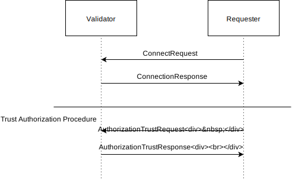
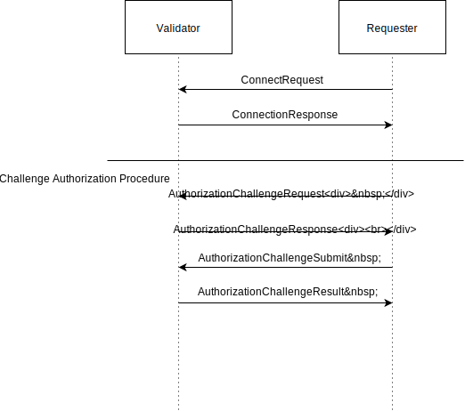

Validator Network¶
The network layer is responsible for communication between validators in a Sawtooth network, including performing initial connectivity, peer discovery, and message handling. Upon startup, validator instances begin listening on a specified interface and port for incoming connections. Upon connection and peering, validators exchange messages with each other based on the rules of a gossip or epidemic [1] protocol.
A primary design goal is to keep the network layer as self-contained as possible. For example, the network layer should not need knowledge of the payload of application messages, nor should it need application-layer provided data to connect to peers or to build out the connectivity of the network. Conversely, the application should not need to understand implementation details of the network in order to send and receive messages.
Services¶
The choice of 0MQ provides considerable flexibility in both available connectivity patterns and the underlying capabilities of the transport layer (IPv4, IPv6, etc.)
We have adopted the 0MQ Asynchronous Client/Server Pattern [2] which consists of a 0MQ ROUTER socket on the server side which listens on a provided endpoint, with a number of connected 0MQ DEALER sockets as the connected clients. The 0MQ guide describes the features of this pattern as follows:
- Clients connect to the server and send requests.
- For each request, the server sends 0 or more replies.
- Clients can send multiple requests without waiting for a reply.
- Servers can send multiple replies without waiting for new requests.
{kind=link}
Multiple DEALER to ROUTER socket pattern
States¶
We define three states related to the connection between any two validator nodes:
- Unconnected
- Connected - A connection is a required prerequisite for peering.
- Peered - A bidirectional relationship that forms the base case for application level message passing (gossip).
Wire Protocol¶
We have standardized on protobuf serialization for any structured messages that need to be passed over the network. All payloads to or from the application layer are treated as opaque.
CONNECT
Connect is the mechanism for initiating the connection to the remote node. Connect performs a basic 0MQ DEALER->ROUTER connection to the remote node and exchanges identity information for the purpose of supporting a two-way conversation. Connections sit atop 0MQ sockets and allow the DEALER/ROUTER conversation.
PING
Ping messages allow for keep alive between ROUTER and DEALER sockets.
PEER
Peer requests establish a bidirectional peering relationship between the two nodes. A Peer request can be rejected by the remote node. If a peer request is rejected, the expectation is that a node attempts to connect with other nodes in the network via some strategy until the peering minimum connectivity threshold for that node is reached. If possible, the bi-directional relationship occurs over the already established 0MQ socket between DEALER and ROUTER.
GET_PEERS
Returns a list of peers of a given node. This can be performed in a basic Connected state and does not require peering to have occurred. The intent is to allow a node attempting to reach its minimum connectivity peering threshold to build a view of active candidate peers via a neighbor of neighbors approach.
BROADCAST(MSG)
Transmits an application message to the network following a ‘gossipy’ pattern. This does not guarantee 100% delivery of the message to the whole network, but based on the gossip parameters, nearly complete delivery is likely. A node only accepts messages for broadcast/forwarding from peers.
SEND(NODE, MSG)
Attempts to send a message to a particular node over the bidirectional 0MQ connection. Delivery is not guaranteed. If a node has reason to believe that delivery to the destination node is impossible, it can return an error response. A node only accepts a message for sending from peer nodes.
REQUEST(MSG)
A request is a special type of broadcast message that can be examined and replied to, rather than forwarded. The intent is for the application layer to construct a message payload which can be examined by a special request handler and replied to, rather than forwarded on to connected peers. If the application layer reports that the request can’t be satisfied, the message will be forwarded to peers per the rules of a standard broadcast message. A node only accepts request messages from peer nodes.
UNPEER
Breaks the peering relationship between nodes. This may occur in several scenarios, for example a node leaving the network (nodes may also silently leave the network, in which case their departure will be detected by the failure of the ping/keepalive). An unpeer request does not necessarily imply a disconnect.
DISCONNECT
Breaks the wire protocol connection to the remote node. Informs the ROUTER end to clean up the connection.
Peer Discovery¶
A bidirectional peering via a neighbor of neighbors approach gives reliable connectivity (messages delivered to all nodes >99% of the time based on random construction of the network).
Peer connections are established by collecting a suitable population of candidate peers through successive CONNECT/GET_PEERS calls (neighbors of neighbors). The connecting validator then selects a candidate peer randomly from the list and attempts to connect and peer with it. If this succeeds, and the connecting validator has reached minimum connectivity, the process halts. If minimum connectivity has not yet been reached, the validator continues attempting to connect to new candidate peers, refreshing its view of the neighbors of neighbors if it exhausts candidates.
{kind=link}
The network component continues to perform a peer search if its number of peers is less than the minimum connectivity. The network component rejects peering attempts if its number of peers is equal to or greater than the maximum connectivity. Even if maximum peer connections is reached, a network service should still accept and respond to a reasonable number of connections (for the purposes of other node topology build outs, etc.)
{kind=link}
Message Delivery¶
The network delivers application messages (payloads received via BROADCAST or SEND) to the application layer. The network also performs a basic validation of messages prior to forwarding by calling a handler in the Message Validation component.
When the network receives a REQUEST message, it calls a provided handler (a “Responder”, for example) to determine if the request can be satisfied. If so, the expectation is that the application layer generates a SEND message with a response that satisfies the request. In this condition, the network layer does not continue to propagate the REQUEST message to the network.
In the case where a node could not satisfy the request, the node stores who it received the request from and BROADCASTs the request on to its peers. If that node receives a SEND message with the response to the request, it forwards the SEND message back to the original requester.
The network accepts application payloads for BROADCAST, SEND, and REQUEST from the application layer.
Network Layer Security¶
0MQ includes a TLS [3] like certificate exchange mechanism and protocol encryption capability which is transparent to the socket implementation. Support for socket level encryption is currently implemented with server keys being read from the validator.toml config file. For each client, ephemeral certificates are generated on connect. If the server key pair is not configured, network communications between validators will not be authenticated or encrypted.
Network Permissioning¶
One of the permissioning requirements is that the validator network be able to limit the nodes that are able to connect to it. The permissioning rules determine the roles a connection is able to play on the network. The roles control the types of messages that can be sent and received over a given connection. The components and nodes that wish to take on these roles must participate in an authorization “handshake” and request the roles they want to take on. The entities acting in the different roles will be referred to as requesters below.
Validators are able to determine whether messages delivered to them should be handled or dropped based on a set of role and identities stored within the Identity namespace. Each requester will be identified by the public key derived from their identity signing key. Permission verifiers examine incoming messages against the policy and the current configuration and either permit, drop, or respond with an error. In certain cases, the connection will be forcibly closed – for example: if a node is not allowed to connect to the validator network.
The following describes the procedure for establishing a new connection with the validator. The procedure supports implementing different authorization types that require the requester to prove their identity. If a requester deviates from the procedure in any way, the requester will be rejected and the connection will be closed. The same is true if the requester sends multiple ConnectionRequests or multiple of any authorization-type message. Certain low level messages, such as Ping, can be used before the procedure is complete, but are rate limited. If too many of the low level messages are received or they are received too close together, the connection may be considered malicious and rejected.
The validator receiving a new connection receives a ConnectionRequest. The validator responds with a ConnectionResponse message. The ConnectionResponse message contains a list of RoleEntry messages and an AuthorizationType. Role entries are the accepted type of connections that are supported on the endpoint that the ConnectionRequest was sent to. AuthorizationType describes the procedure required to gain access to that role. Trust is the simplest authorization type and must be implemented by all requesters at a minimum. If the requester cannot comply with the given authorization type for that role entry, it is unable to gain access to that role.
message ConnectionRequest {
// This is the first message that must be sent to start off authorization.
// The endpoint of the connection.
string endpoint = 1;
}
enum RoleType {
// A shorthand request for asking for all allowed roles.
ALL = 0;
// Role defining validator to validator communication
NETWORK = 1;
}
message ConnectionResponse {
// Whether the connection can participate in authorization
enum Status {
OK = 0;
ERROR = 1;
}
//Authorization Type required for the authorization procedure
enum AuthorizationType {
TRUST = 0;
CHALLENGE = 1;
}
message RoleEntry {
// The role type for this role entry
RoleType role = 1;
// The Authorization Type required for the above role
AuthorizationType auth_type = 2;
}
repeated RoleEntry roles = 1;
Status status = 2;
}
In the future, RoleType will include other roles such as CLIENT, STATE_DELTA, and TP.
Authorization Types¶
Presented here are the two authorization types that will be implemented initially: Trust and Challenge.
- Trust
The simplest authorization type is Trust. If Trust authorization is enabled, the validator will trust the connection and approve any roles requested that are available on that endpoint. If the requester wishes to gain access to every role it has permission to access, it can request access to the role ALL, and the validator will respond with all available roles. However, if a role that is not available is requested, the requester is rejected and the connection will be closed.
message AuthorizationTrustRequest { // A set of requested RoleTypes repeated RoleType roles = 1; string public_key = 2; } message AuthorizationTrustResponse { // The actual set the requester has access to repeated RoleType roles = 1; }
Message flow for Trust Authorization:
- Challenge
If the connection wants to take on a role that requires a challenge to be signed, it will request the challenge by sending the following to the validator it wishes to connect to.
message AuthorizationChallengeRequest { // Empty message sent to request a payload to sign }
The validator will send back a random payload that must be signed.
message AuthorizationChallengeResponse { // Random payload that the connecting node must sign bytes payload = 1; }
The requester then signs the payload message and returns a response that includes the following:
message AuthorizationChallengeSubmit { // public key of node string public_key = 1; // signature derived from signing the challenge payload string signature = 3; // A set of requested Roles repeated RoleType roles = 4; }
The requester may also request ALL. The validator will respond with a status that says whether the challenge was accepted and the roles that the connection is allowed take on.
message AuthorizationChallengeResult { // The approved roles for that connection repeated RoleType roles = 1; }
Message flow for Challenge Authorization:
When the validator receives an AuthorizationChallengeSubmit message, it verifies the public key against the signature. If the public key is verified, the requested roles is checked against the stored roles to see if the public key is included in the policy. If the node’s response is accepted, the node’s public key is stored and the requester may start sending messages for the approved roles.
If the requester wanted a role that is either not available on the endpoint or the requester does not have access to one of the roles requested, the challenge will be rejected and the connection is closed. At that point the requester will need to restart the connection process.
- Authorization Violation
If at any time a requester tries to send a message that is against its allowed permission, the validator responds with an AuthorizationViolation message and the connection is closed. If that requester wishes to rejoin the network, it will need to go back through the connection and authorization process described above.
message AuthorizationViolation { // The Role the requester did not have access to RoleType violation = 1; }
{kind=link}
{kind=link}
Footnotes
| [1] | http://web.mit.edu/devavrat/www/GossipBook.pdf |
| [2] | http://zguide.zeromq.org/php:chapter3#toc19 |
| [3] | https://github.com/zeromq/pyzmq/blob/master/examples/security/ironhouse.py |